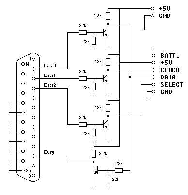
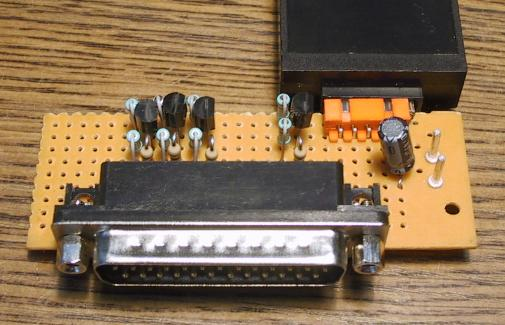

| Index | wersja polska |
The MK-90 cartridge can be read and written with a simple circuit connected to the parallel port. The required +5V supply can be drawn from the keyboard, PS2 mouse, or USB port.
For a similar device controlled through the USB port please refer to the SMPReaderUSB designed by Ilya Danilov.

Any general purpose small signal npn transistors can be used, for example 2N3904, BC547.

The control software is as simple as the circuit.
 mk90prog.zip - file size: 18kB, source and executable
mk90prog.zip - file size: 18kB, source and executable
The program won't run under Windows 2000, NT, XP, because these systems don't allow direct hardware access from user programs.
Insert the cartridge, apply +5V then run one of these programs: